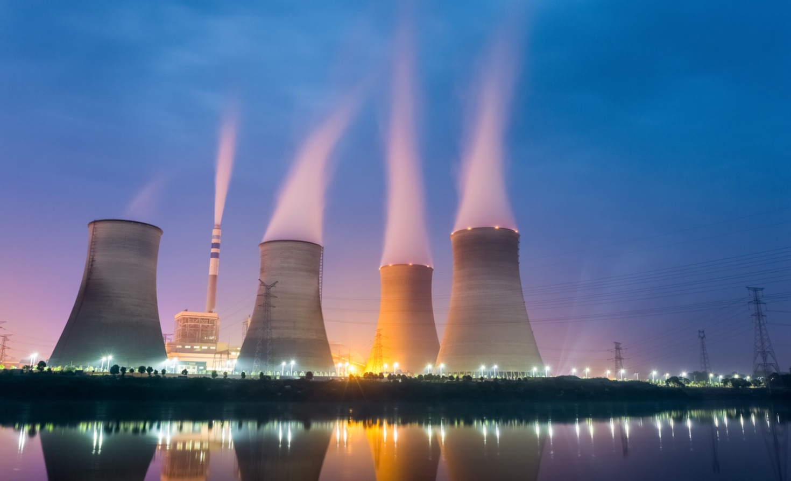
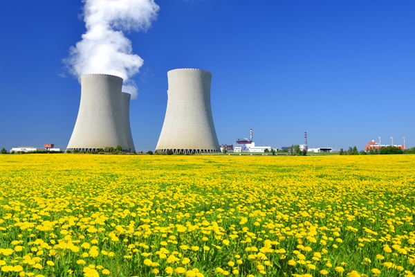
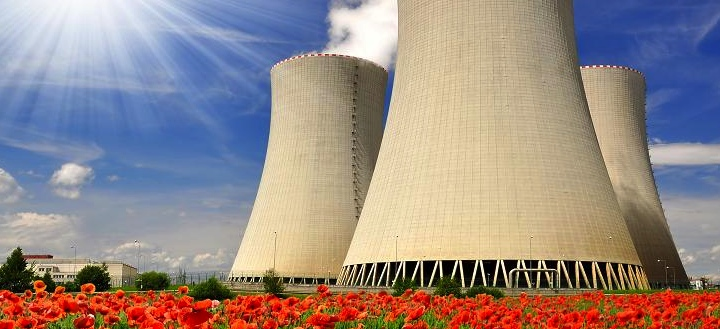

Why?
SAFE - Nuclear energy caused the least amount of death out of all energy sources per kilowatt-hour of energy produced.
SMALL LAND FOOTPRINT - Despite producing massive amounts of carbon-free power, nuclear energy produces more electricity on less land than any other clean-air source.
ZERO EMISSION - Sea levels are rising and oceans are becoming warmer. Longer, more intense droughts threaten crops, wildlife and freshwater supplies. From polar bears in the Arctic to marine turtles off the coast of Africa, our planet’s diversity of life is at risk from the changing climate.
No other energy source can provide the massive power humans need at ZERO cost to the environment